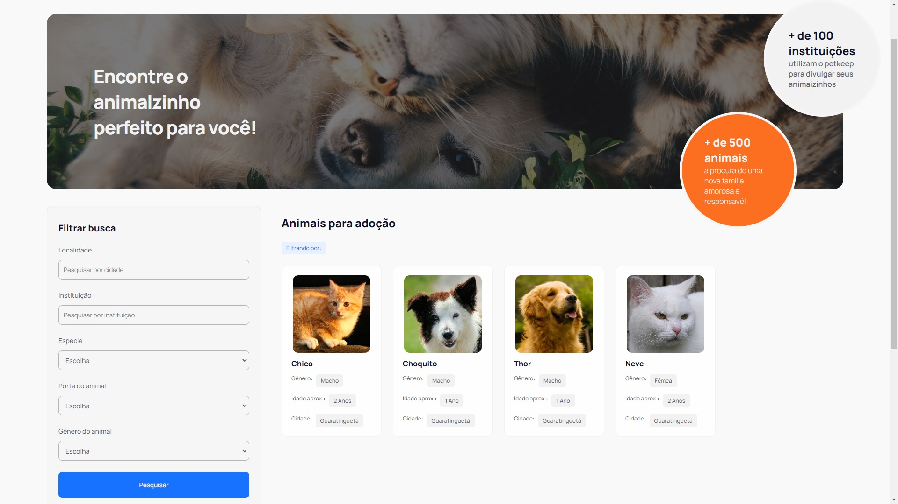

Seja bem vindo(a)
ao meu portfólio
Educação e Experiências
Projetos
PetKeep
O PetKeep é um sistema web que permite que instituições de cuidado animal gerenciem e monitorem as informações de seus voluntários, seus animais e, caso necessário, os divulguem para adoção. A prioridade do sistema é oferecer um recurso simples e prático para que as instituições interessadas possam divulgar seus animais, campanhas, manter registros veterinários (vacinas, doenças, consultas, medicações, vermífugos etc), animais em lar temporário etc.
